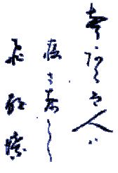

Haiku as a Notation
Haiku is a poetic form
originating in Japanese antiquity.
Haiku poetry
 Like all poetry, Haiku is capable of reaching deeply into the mind. It can be appreciated for its obvious surface meaning, for a surprise that is revealed, for the visual feast provided by the script in which is it written, by puns on the words which give another meaning, or puns on the spoken sounds, or visual puns on ideographs. At its best, Haiku does all of these and more at once.
References
Last modified: April 16, 2002 email: McKeeman@MathWorks{.}COM |